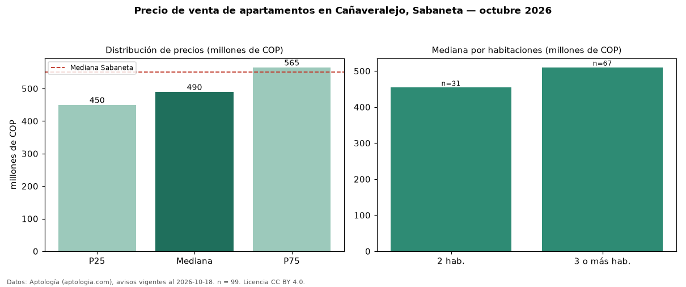

Precio de venta de apartamentos en Cañaveralejo, Sabaneta — octubre 2026
COP 490 millones es el precio mediano de apartamentos en venta en Cañaveralejo, Sabaneta (n = 99 avisos). Frente a la mediana de Sabaneta para apartamentos (COP 550 millones), queda 11 % por debajo. Por metro cuadrado, la mediana es COP 6,89 millones/m² (n = 98 avisos con área), 3 % por debajo de Sabaneta (COP 7,12 millones/m²). Por precio mediano es el puesto 24 de 30 barrios de Sabaneta con al menos 30 avisos de apartamentos en venta (COP): entre las más económicas. Con el precio por m² de arriendo del mismo segmento (COP 40.909/m² al mes), la rentabilidad bruta implícita es 7,1 % anual (aproximación con medianas de ofertas distintas). El área mediana anunciada es 69 m². El segmento con más oferta es el de 3 o más habitaciones (67 avisos, mediana COP 510 millones); pasar de 2 habitaciones a 3 o más habitaciones cambia la mediana +12 %. La administración mediana declarada es COP 370.000 al mes (n = 70). Datos: Aptología (aptologia.com), CC BY 4.0 — https://www.aptologia.com/venta/sabaneta/canaveralejo. Archivos: PDF, CSV con las cifras y gráfica PNG.

| Avisos únicos | 99 |
|---|---|
| Percentil 25 | COP 450.000.000 |
| Mediana | COP 490.000.000 |
| Percentil 75 | COP 565.000.000 |
| Mediana por m² | COP 6.893.382 |
Fuente: avisos vigentes de portales inmobiliarios recopilados por Aptología, deduplicados (mínimo 30 avisos únicos por celda). Precios pedidos, no cerrados. Fecha: 2026-10-18.